[조건]
\[ P = \frac{KQH}{6.12\eta} = \frac{1.1 \times 15 \times 20}{6.12 \times 0.8} = 67.4 \text{ [kW]} \]
정답 67.4 [kW]
부분점수
| 점수 | 세부기준 |
|---|---|
| 3점 | 계산과정과 정답이 모두 맞은 경우 3점 획득 |
| 0점 | 계산과정과 정답에 오류가 있는 경우 0점 |
해설
펌프용 전동기의 출력은 다음 식으로 구한다.
\[ P = \frac{KQH}{6.12\eta} \text{ [kW]} \]
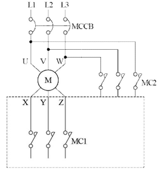
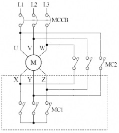
Y-Δ 기동전류는 전전압 기동전류의 \(\frac{1}{3}\) 배이다.
MCCB를 투입하고 MC1을 단락시켜 Y결선으로 기동한 후, 타이머 설정 시간이 지나면 MC1은 개방되고 MC2는 단락되어 Δ결선으로 운전한다. 이때, MC1과 MC2는 동시투입이 되지 않도록 인터록 회로로 구성한다.
부분점수
| 점수 | 세부기준 |
|---|---|
| 6점 | 결선도를 정확하게 작성하고, (2), (3)번 답을 핵심키워드를 포함하여 작성한 경우 |
| 2~0점 | (1) 문항의 연결선이 모두 정답인 경우에만 2점 획득 |
| 2~0점 | (2) 문항의 핵심 키워드가 모두 포함되었을 경우에만 2점 획득 |
| 2~0점 | (3) 문항의 핵심 키워드가 모두 포함되었을 경우에만 2점 획득 |
서술형 핵심 KEYWORD
전전압, 기동전류, \(\frac{1}{3}\)
MC1 단락, Y결선 기동, MC1 개방, MC2 단락, Δ결선 운전, 인터록
접근 POINT
전동기의 대표적인 기동방식인 Y-Δ 기동방식에 대한 결선방법, 전전압기동과의 기동전류 비교와 실제 기동순서에 대하여 알고 있는지 물어보는 문제이다.
해설
전동기의 대표적인 기동방식인 Y-Δ 기동방식은 전전압기동방식보다 기동전류가 \(\frac{1}{3}\) 배가 되어 기동시에는 Y결선으로 적은 전류로 큰 기동토크를 얻어 전동기를 돌리다가 어느 정도 안정된 속도가 되면 타이머 동작으로 Δ결선으로 변경되어 충분한 전류로 전동기를 힘있게 동작시키는 방식이다.
결선 방법은 MC2 위와 아래의 결선순서가 MC2의 위(1-2-3)를 기준으로 MC2 아래의 결선이 왼쪽부터 1-3-2 순서대로 연결하고 MC1의 아래를 모두 연결하면 Y-Δ 결선이 완성된다. MC1 동작시 Y결선으로 기동모드, MC1 동작시 Δ결선으로 전동기 운전모드가 된다.
이 둘이 동시에 동작되면 안되므로 제어회로를 MC1과 MC2가 인터록회로(Inter-Lock)가 되도록 구성한다.
①
②
③
④
⑤
해설) 단순 암기형 / 난이도 중
설계변경 개요서
설계변경 도면
설계설명서
계산서
수량산출 조서
| 점수 | 세부기준 |
|---|---|
| 5~0점 | 소문항 5개 중 정답 1개당 부분점수 1점 획득 |
전력시설물 공사감리업무 수행지침에서 발주자가 여러 가지 사유로 설계변경 시 책임 감리원에게 설계변경을 서면으로 지시할 때 필요한 첨부 서류를 묻는 문제이다.
전력시설물 공사감리업무 수행 시 착공, 공사 시행, 품질관리, 시공, 안전관리, 사고처리, 환경관리, 설계변경 및 계약금액 조정, 기성 및 준공검사, 시설물 인수인계, 유지관리 및 하자보수와 관련된 서류들과 업무 흐름 및 기한 등을 알고 있는지 물어보고 있는 문제들이 자주 출제되고 있다.
전력시설물 공사감리업무 수행지침상 설계변경에 따른 계약금액 조정 업무 처리절차
발주자는 외부적 사업환경의 변동, 사업추진 기본계획의 조정, 민원에 따른 노선변경, 공법 변경, 그 밖의 시설물 추가 등으로 설계변경이 필요한 경우에는 다음 각 호의 서류를 첨부하여 반드시 서면으로 책임감리원에게 설계변경을 하도록 지시하여야 한다. 다만, 발주자가 설계변경 도서를 작성할 수 없을 경우에는 설계변경개요서만 첨부하여 설계변경 지시를 할 수 있다.
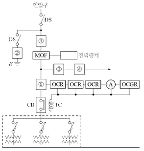
| 번호 | 심벌 | 약호 | 명칭 | 용도 및 역할 |
|---|---|---|---|---|
| ① | ||||
| ② | ||||
| ③ | ||||
| ④ | ||||
| ⑤ |
| 번호 | 심벌 | 약호 | 명칭 | 용도 및 역할 |
|---|---|---|---|---|
| ① | 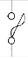 그림 |
PF | 전력용 퓨즈 | 단락전류 및 고장전류를 차단한다. |
| ② | 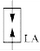 그림 |
LA | 피뢰기 | 이상 전압 침입 시 이를 대지로 방전시키며 속류를 차단한다. |
| ③ | 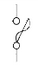 그림 |
COS | 컷아웃 스위치 | 계기용 변압기 및 부하 측에 고장 발생시 이를 고압회로로부터 분리하여 사고의 확대를 방지한다. |
| ④ | 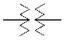 그림 |
PT | 계기용 변압기 | 고전압을 저전압(정격 110[V])로 변성한다. |
| ⑤ | 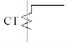 그림 |
CT | 변류기 | 대전류를 소전류(정격 5[A])로 변성한다. |
부분점수
| 점수 | 세부기준 |
|---|---|
| 10점 | 표를 모두 정확하게 작성한 경우 10점 획득 |
| 9~0점 | 오기입 1개당 1점씩 감점 |
피뢰기의 정격 전압 (표준값[kV]) | 126 | 144 | 154 | 168 | 182 | 196 | | — | — | — | — | — | — |
정답해설) 단순 계산형 / 난이도 下
정답[계산과정] \[ V_n = \alpha \cdot \beta \cdot V_m = 0.75 \times 1.1 \times 170 = 140.25 \text{ [kV]} \]
정답 144 [kV] 선정
부분점수
| 점수 | 세부기준 |
|---|---|
| 5점 | 계산과정과 정답에 오류가 없는 경우 5점 획득 |
| 0점 | 계산과정이나 정답에 오류가 있는 경우 0점 |
해설
피뢰기의 정격전압 [kV] = 접지계수 × 여유도 × 계통의 최고 전압 [kV]
①
②
③
| 점수 | 세부기준 |
|---|---|
| 3점~0점 | 한 문항이 맞을 때마다 1점씩 획득 |
배전 선로에서 사용하는 전압조정기의 종류
해설) 단순 계산형 / 난이도 중
\[ 실지수 = \frac{XY}{H(X+Y)} = \frac{10 \times 30}{3 \times (10 + 30)} = 2.5 \]
정답 2.5
\[ N = \frac{AED}{FU} = \frac{10 \times 30 \times 400 \times 1.3}{2500 \times 2 \times 0.6} = 52[등] \]
정답 52[등]
부분점수
| 점수 | 세부기준 |
|---|---|
| 5점 | (1), (2)번이 모두 맞은 경우 5점 획득 |
| 3점 | (1)번만 맞은 경우 3점 획득 |
| 2점 | (2)번만 맞은 경우 2점 획득 |
해설
실지수 계산
\[ 실지수 = \frac{XY}{H(X+Y)} \]
X: 가로 길이[m], Y: 세로 길이[m], H: 작업면에서 천장까지의 높이[m]
형광등 기구수 계산
\[ N = \frac{AED}{FU} \]
A: 가로 길이[m], E: 세로 길이[m], D: 조도[lx], F 광속[lm], U: 조명률[%]
\[ 변류기 비율: 60/5 A = 12 A/A \]
정격 전류: 30 A
과부하율: 120%
\[ 트립 전류 (I_{trip}): 정격전류 × 변류기비 × 과부하율 \]
\[ I_{trip} = 30 \text{ A} \times 12 \times 1.2 = 432 \text{ A} \]
따라서 트립 전류치는 432 A로 설정해야 한다.
정답 432 A
해설) 단순 계산형 / 난이도 下
정답[계산과정] \[ I_t = 30 \times \frac{5}{60} \times 1.2 = 3 [A] \]
정답 3[A]로 설정한다.
부분점수
| 점수 | 세부기준 |
|---|---|
| 4점 | 계산과정과 정답이 모두 맞은 경우 4점 획득 |
| 0점 | 계산과정이나 정답에 오류가 있는 경우 0점 |
해설
OCR(과전류 계전기)의 탭 전류 2[A], 3[A], 4[A], 5[A], 6[A], 7[A], 8[A], 10[A], 12[A]
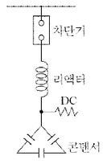
정답 (1) 4[%]
6[%]
11[%]
부분점수
| 점수 | 세부기준 |
|---|---|
| 5점 | (1), (2), (3)번이 모두 맞은 경우 5점 획득 |
| 3점 | 3문항 중 2문항이 맞은 경우 3점 획득 |
| 2점 | 3문항 중 1문항이 맞은 경우 2점 획득 |
해설
직렬 리액터의 용량은 제5고조파 공진조건을 이용하여 계산할 수 있다.
\[ 5\omega L = \frac{1}{5\omega C} 에서 \omega L = \frac{1}{25} \times \frac{1}{\omega C} = 0.04 \times \frac{1}{\omega C} \]
계산 결과 직렬 리액터의 용량은 콘덴서 용량의 4[%]이다. 직렬 리액터의 용량은 계산상으로는 콘덴서 용량의 4[%] 이상이 되도 되지만 주파수 변동 등을 고려하여 실제로는 6[%]인 것이 사용된다.
리액터 용량은 다음과 같이 계산할 수 있다.
\[ 3\omega L = \frac{1}{3\omega C} 에서 \omega L = \frac{1}{9} \times \frac{1}{\omega C} = 0.11 \times \frac{1}{\omega C} 가 된다. \]
직렬 리액터의 용량은 콘덴서 용량의 11[%]이다.
\(R_1, R_2, R_3\)는 계전기이며, 이 계전기의 보조 a접점 또는 b접점을 추가 또는 삭제하여 작성한다.
불필요한 접점을 사용하지 않도록 하며, 보조접점에는 접점명을 기입한다.
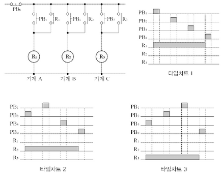
병렬 우선순위 회로
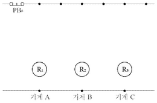
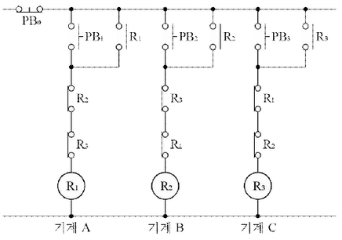
부분점수
| 점수 | 세부기준 |
|---|---|
| 6점 | 회로도를 정확하게 작성한 경우 6점 획득 |
| 0점 | 회로도에 오류가 있는 경우 0점 |
| 수용가 | 설비용량 [kW] | 수용률 [%] |
|---|---|---|
| A | 300 | 80 |
| B | 200 | 60 |
| C | 100 | 80 |
\[ 수용가 A의 최대전력: 300kW \times \frac{80}{100} = 240kW \] \[ 수용가 B의 최대전력: 200kW \times \frac{60}{100} = 120kW \] \[ 수용가 C의 최대전력: 100kW \times \frac{80}{100} = 80kW \]
\[ 합성 최대전력(P): P = P_A + P_B + P_C = 240kW + 120kW + 80kW = 440kW \]
\[ 부등률을 고려한 합성 최대전력: P_{합성} = P_A + P_B \times \frac{1}{1.1} + P_C \times \frac{1}{1.1^2} \]
\[ P_{합성} = 240kW + 120kW \times \frac{1}{1.1} + 80kW \times \frac{1}{1.1^2} \approx 240kW + 109.09kW + 66.12kW \approx 415.21kW \]
따라서, 부등률을 1.1로 고려한 합성 최대전력은 약 415.21 kW 입니다.
정답 약 415.21 kW
해설) 단순 계산형 / 난이도 下
정답[계산과정] \[ 합성 최대 전력 = \frac{300 \times 0.8 + 200 \times 0.6 + 100 \times 0.8}{1.1} = 400 [kW] \]
정답 400 [kW]
부분점수
| 점수 | 세부기준 |
|---|---|
| 3점 | 계산과정과 정답이 모두 맞은 경우 3점 획득 |
| 0점 | 계산과정이나 정답에 오류가 있는 경우 0점 |
해설 \[ 합성 최대 전력 = \frac{\text{개별 최대 수용 전력의 합}}{\text{부등률}} = \frac{\text{설비용량 × 수용률}}{\text{부등률}} \]
[부하 표]
| 부하 | 용량 | 수용률 | 부등률 |
|---|---|---|---|
| A | 5,000 [kW] | 80[%] | 1.2 |
| B | 3,000 [kW] | 84[%] | 1.2 |
| C | 7,000 [kW] | 92[%] | 1.2 |
[도면]
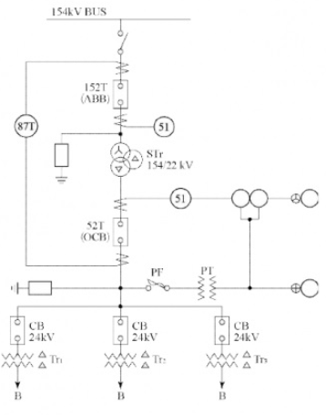
[참고표]
| 변압기 Tr1 | 변압기 Tr2 | 변압기 Tr3 |
|---|
\[ T_{r1} = \frac{5,000 \times 0.8}{1.2 \times 0.9} = 3,703.7 \text{ [kVA]} \]
\[ T_{r2} = \frac{3,000 \times 0.84}{1.2 \times 0.9} = 2,333.33 \text{ [kVA]} \]
\[ T_{r3} = \frac{7,000 \times 0.92}{1.2 \times 0.9} = 5,962.96 \text{ [kVA]} \]
정답| \[ | 변압기 T_{r1} | 변압기 T_{r2} | 변압기 T_{r3} | \] | ||||
|---|---|---|---|---|
| 4,000 [kVA] | 3,000 [kVA] | 6,000 [kVA] |
\[ STr = \frac{3,703.7 + 2,333.33 + 5,962.96}{1.3} = 9,230.76 \text{ [kVA]} \]
표에서 10,000 [kVA]를 선정한다.
정답 10,000 [kVA]
\[ P_s = \frac{100}{0.4} \times 10 = 2,500 \text{ [MVA]} \]
표에서 3,000 [MVA]를 선정한다.
정답 3,000 [MVA]
\[ P_s = \frac{100}{0.4 + 4.5} \times 10 = 204.08 \text{ [MVA]} \]
표에서 300 [MVA]를 선정한다.
정답 300 [MVA]
명칭: 주변압기 차동 계전기
역할: 발전기나 변압기의 내부 고장 보호
명칭: 과전류 계전기
역할: 정정값 이상의 전류가 흘렀을 때 동작하여 경보를 발하거나 차단기를 동작
부분점수
| 점수 | 세부기준 |
|---|---|
| 12점 | (1)~(6)번이 모두 맞은 경우 12점 획득 |
| 2점 | (1)~(6)번 중 한 문항이 맞을 때마다 2점씩 획득 |
정격전류가 320[A]이고, 역률 0.85인 3상 유도전동기가 있다. 다음 제시한 자료에 의하여 전압강하를 구하시오. [배점: 4점]
[참고자료]
(난이도: 중)
[계산 과정]
\[ 1선당 저항 R = 0.18 \times 150 \times 10^{-3} = 0.027 \, [\Omega] \]
\[ 1선당 리액턴스 X_L = \omega L = 0.102 \times 150 \times 10^{-3} = 0.0153 \, [\Omega] \]
\[ 전압강하 e = \sqrt{3} \times 320 \times (0.027 \times 0.85 + 0.0153 \times \sqrt{1 - 0.85^2}) = 17.187 \dots \approx 17.19 \, [V] \]
정답 17.19 [V]
부분 점수
| 점수 | 세부 기준 |
|---|---|
| 4점 | 계산 과정과 정답이 모두 맞은 경우 |
| 0점 | 정답이 틀리거나 계산 과정에 오류가 있는 경우 |
접근 POINT
3상에서 전압 강하에 대한 기본적인 수식을 암기하고 적용할 수 있는 능력을 확인하는 문제입니다. 추가적으로 참고 자료에 [km]당 저항 및 리액턴스와 거리를 주고 저항과 리액턴스 값을 계산하게 하였으며, 역률을 주고 무효율을 계산하도록 한 것입니다.
공식 CHECK
해설
STEP 1. 참고 자료를 이용하여 1선당 저항과 리액턴스를 계산
STEP 2. 3상 전압 강하 수식을 이용하여 전압 강하 계산
①
②
③
부분점수
| 점수 | 세부기준 |
|---|---|
| 3점~0점 | 한 문항이 맞을 때마다 1점씩 획득 |
해설
[보호 계전기의 오동작을 발생시키는 원인]
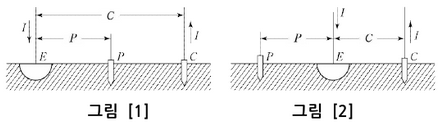
부분점수
| 점수 | 세부기준 |
|---|---|
| 5점 | (1), (2)번이 모두 맞은 경우 5점 획득 |
| 3점 | (2)번만 맞은 경우 3점 획득 |
| 2점 | (1)번만 맞은 경우 2점 획득 |
해설
그림 [2]와 같이 전극이 배치되어 있으면 참값을 구할 수 있는 P 전극의 위치가 존재하지 않는다.
| 접지계통 | 고장전류 경로 |
|---|---|
| 단일 접지계통 | |
| 중성점 접지계통 | |
| 다중 접지계통 |
해설) 단답 암기형 / 난이도 중
정답| 접지계통 | 경로 |
|---|---|
| 단일 접지계통 | 선로-지락점-대지-접지점-중성점-선로 |
| 중성점 접지계통 | 선로-지락점-대지-접지점-중성점-선로 |
| 다중 접지계통 | 선로-지락점-대지-다중 접지극의 접지점-중성점-선로 |
부분점수
| 점수 | 세부기준 |
|---|---|
| 5점 | 표를 정확하게 작성한 경우 5점 획득 |
| 3점 | 세 부분 중 두 부분만 정확하게 작성한 경우 3점 획득 |
| 2점 | 세 부분 중 한 부분만 정확하게 작성한 경우 2점 획득 |
해설: 단순 계산형 + 도면 완성 / 난이도 중
[계산 과정]
\[ I = \frac{100}{5} + \frac{5 \times 10^3}{100} = 70 [A] \]
정답 70[A]
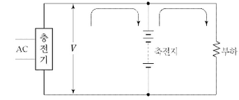
부분 점수
| 점수 | 세부 기준 |
|---|---|
| 5점 | (1), (2)번이 모두 맞은 경우 5점 획득 |
| 3점 | (2)번이 맞은 경우 3점 획득 |
| 2점 | (1)번이 맞은 경우 2점 획득 |
해설
정격 방전율
\[ 충전기 2차 전류 [A] = \frac{\text{축전지 정격용량 [Ah]} + \frac{\text{상시 부하용량 [VA]}}{\text{표준 전압 [V]}}}{\text{정격 방전율 [h]}} \]
고조파 전류는 각종 선로나 간선에 에너지 절약 기기나 무정전전원장치 등이 증가되면서 선로에 발생하여 전원의 질을 떨어뜨리고 과열 및 이상 상태를 발생시키는 원인이 되고 있다.
정답①
②
③
(서술 암기형 / 난이도 중)
| 점수 | 세부 기준 |
|---|---|
| 5점 | 3문항이 모두 정답인 경우 5점 획득 |
| 3점 | 2문항이 정답인 경우 3점 획득 |
| 2점 | 1문항이 정답인 경우 2점 획득 |
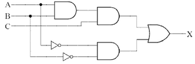
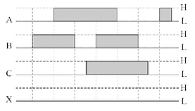
| A | B | C | X |
|---|---|---|---|
| L | L | L | |
| L | L | H | |
| L | H | L | |
| L | H | H | |
| H | L | L | |
| H | L | H | |
| H | H | L | |
| H | H | H |
\[ (1) X = ABC + \overline{AB} \]
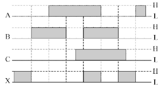
| A | B | C | X |
|---|---|---|---|
| L | L | L | H |
| L | L | H | H |
| L | H | L | L |
| L | H | H | L |
| H | L | L | L |
| H | L | H | L |
| H | H | L | L |
| H | H | H | H |
| 점수 | 세부기준 |
|---|---|
| 6점 | (1), (2), (3)번이 모두 맞은 경우 6점 획득 |
| 2점 | (1), (2), (3)번 중 한 문항이 맞을 때마다 2점씩 획득 |